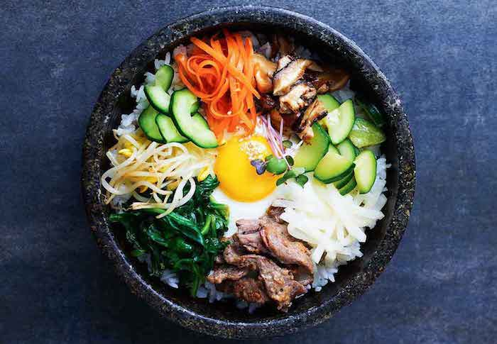

Intro
Along with kimchi, bibimbap takes its place among the favored foods in Korean cuisine. Literally meaning 'mixed rice,' it's a popular meal consisting of white rice topped with vegetables, beef, a whole egg, and gochujang (red chili pepper paste). For those who cannot handle the spiciness, you can substitute it with soy sauce or Sriracha.
1 cucumber, cut into matchsticks
1/4 cup gochujang
1 bun fresh spinach, cut into thin strips
1 tablespoon soy sauce
2 teaspoons olive oil, divided
2 carrots, cut into matchsticks
1 clove garlic, minced
1 pinch red pepper flakes
1 pound thinly-sliced beef top round steak
4 cups cooked white rice
4 teaspoons toasted sesame oil, divided
1 teaspoon sesame seeds
2 teaspoons gochujang
Assembly
To assemble the dish, divide cooked rice into 4 large serving bowls. Top with spinach mixture, a few pieces of beef, and cucumber mixture. Place 1 egg atop each serving. Drizzle each bowl with 1 teaspoon of sesame oil, a sprinkle of sesame seeds, and a small amount of gochujang to taste.
